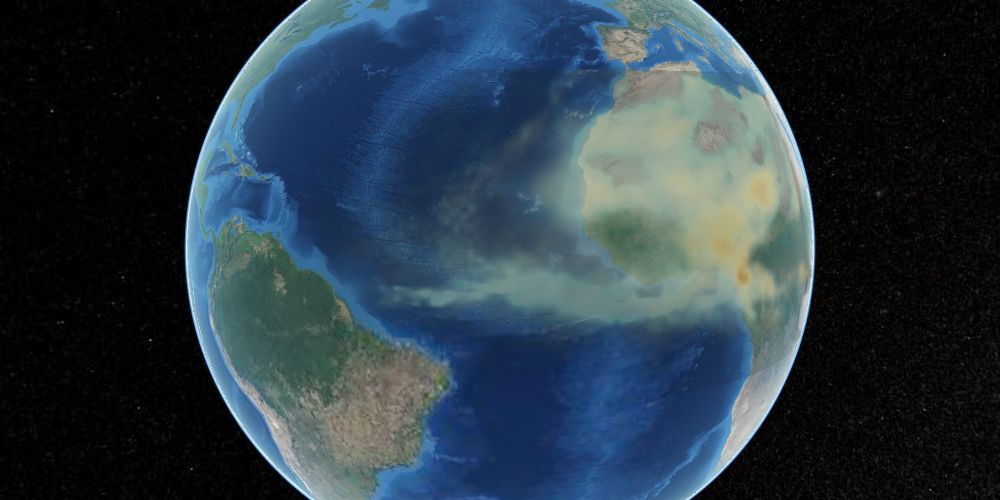
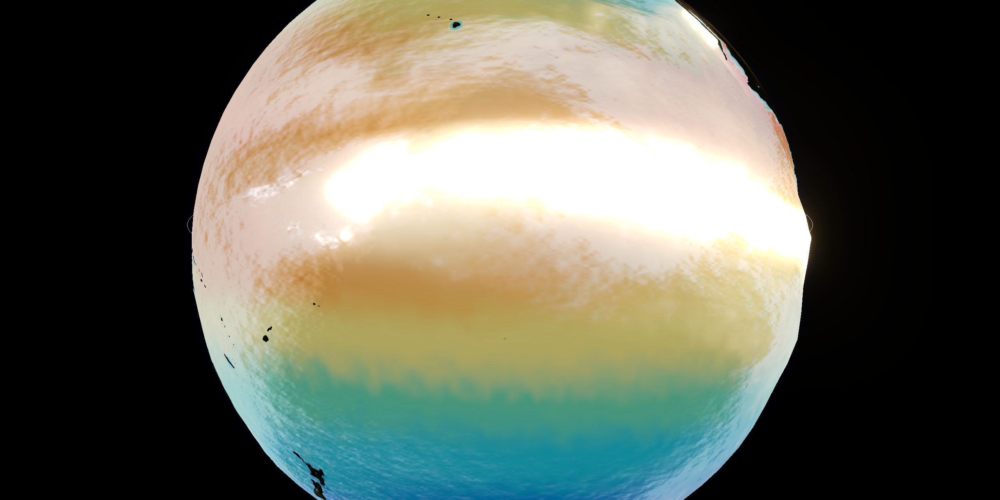
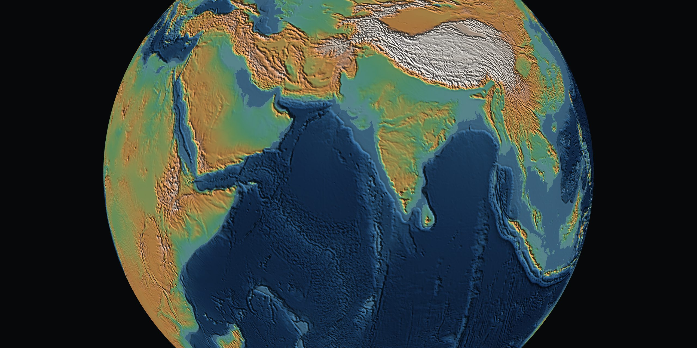

A Ponte de Poeira
Todo ano um rio de poeira sai do Saara, cruza o Atlântico e fertiliza a Amazônia.
El Niño
O Pacífico mês a mês pela temperatura real do mar, até o maior pico da série, em setembro de 2026.


